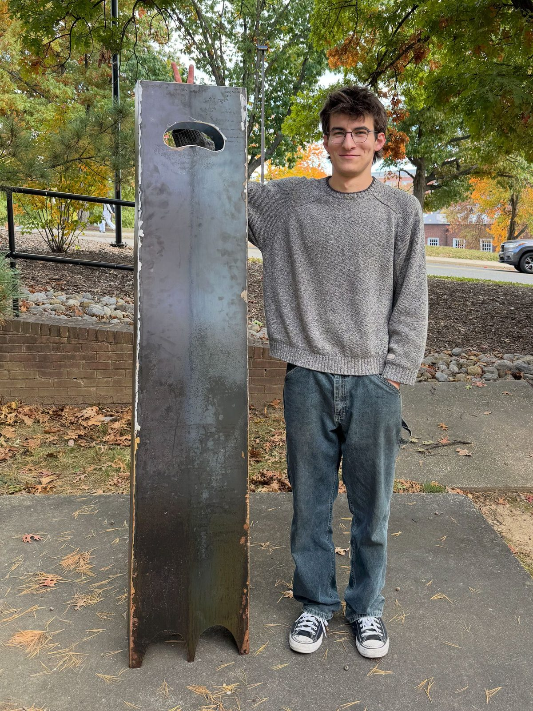
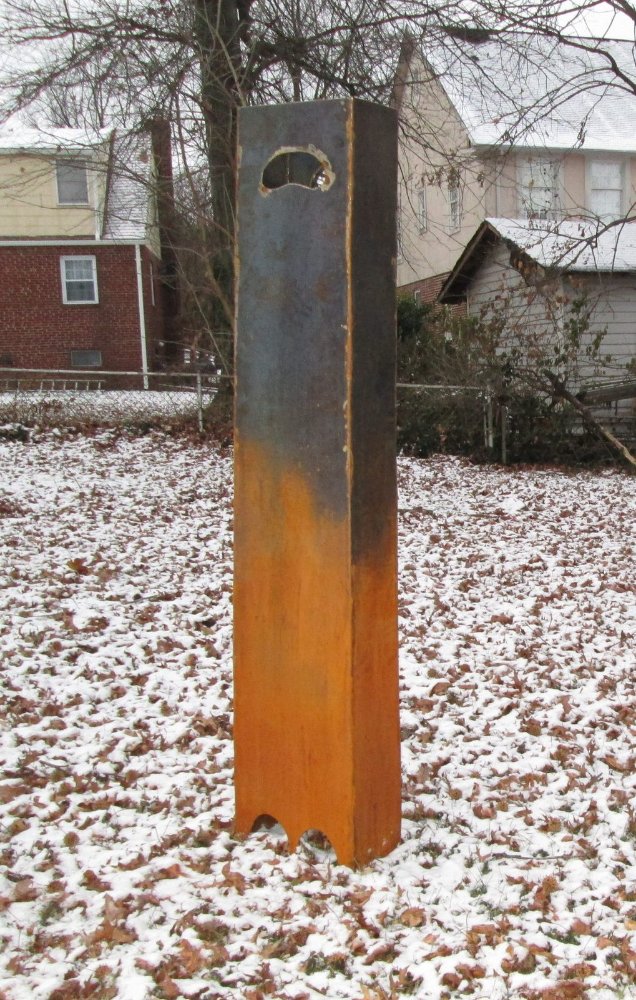

Untitled (The monolith)


- Medium
- Welded steel
- Size
- Approx. 6′ × 14″ × 8.5″
- Year
- 2025
- Now
- Rusting in the woods at an undisclosed location
The monolith stands exactly at my height. The holes cut near the top line up at eye level, and the two arched slots at the base leave room for my feet. And after it was shown, I left it in the woods to rust and decay on its own schedule.
I coated it with a rusting agent formula I developed to kickstart the process. In the first photo at the top of the page, you can see the beginning of the rust after I initially sprayed it. As the months passed, the spots that I had sprayed rusted the most, turning to a deep orange. I’m very pleased with how it turned out.
To me, this piece is about controlled narratives. The slots at the bottom invite you to step right up to it, and once you’re there, the holes at the top work as a viewfinder. When it’s on display in a gallery, you see what I point it at and nothing else. The part that interests me most is where that control runs out. This thing will likely outlive me. I’ve abandoned it, and whoever finds it won’t get a wall label or an artist statement. To them it has no title at all. So do I decide what it means, or do the people who use it? What will you call it?